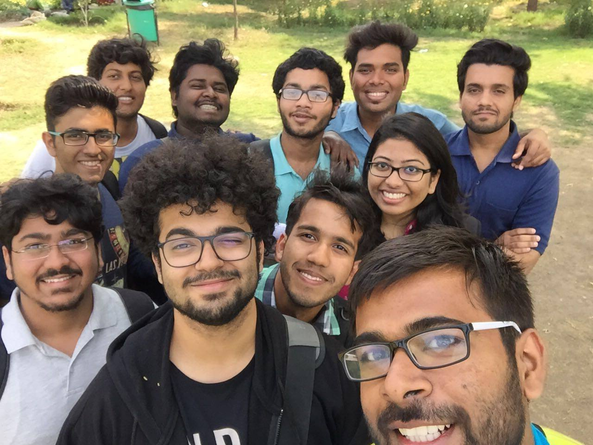
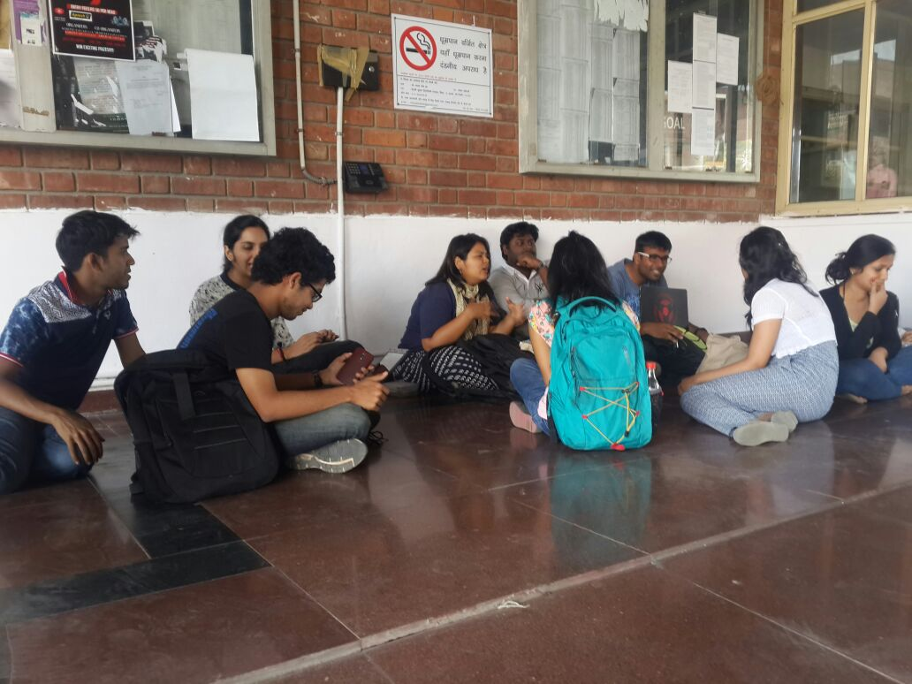

The bright, pleasant afternoon of 9th of March marked the first meeting for TEDxNSIT 2016. The experienced among the lot briefed the rest on the departments they could work for and provided them with a fine definition of their roles. The theme for this year’s event was finalised upon : India at Crossroads. Enthusiasm levels were high and the intellectuals were busy crafting a list of potential speakers, innovators who could justify the theme well.The excitement could be felt the air!

Team members, scattered like autumn leaves got together, proposed names of speakers ranging from economists to start up honchos and shared their stage designing ideas. Attracting inadvertent attention of passers-by at the admin was a group of coders working furiously towards a better website. Brains were racked, ideas discussed and, of course, jokes cracked. Two hours just flew by. Be ready as something cool and exciting is brewing up under the curtain of TEDxNSIT.
On the warm afternoon of 16th March, tedx comrades assemebled once again with new ideas and energy. Deliberating upon the speaker's list and proposing some out-of-the- box publicity strategies, the team finally reached to a consensus. Yes friends, we just climbed another step towards organizing a successful tedx event at NSIT!

On March 21st, the enthusiastic team met once again with revived spirits and energy.This time the meeting was impromptu. Adding more names to the speakers' list and preparing content for our astounding website, TEDXNSIT 2016 promises to be bigger and better!